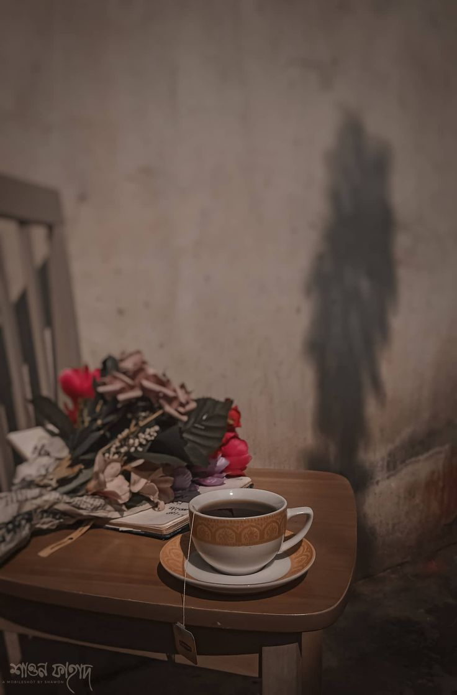

# Chapter 2 — Dil Ki Tabdeeli
✦ Subah Ki Azaan & Roshni ✦
*"Kabhi kabhi ek raat ka khwaab... poori zindagi ka rukh badal deta hai."*
Subah ki azaan ki awaaz ne Fahad ki aankh khol di.
Awaaz dheere dheere kamre ki khamoshi mein ghul rahi thi.
Fahad ne aankhen kholi...
Lekin kuch lamhon tak woh bistar par waise hi pada raha.
Uski nazrein saamne chhat par tiki hui thin.
Neend abhi poori tarah aankhon se gayi nahi thi...
Magar raat ka khwaab...
Woh ab bhi bilkul taza tha.
Jaise neend se jaagne ke baad bhi us khwaab ka koi hissa uske saath jaag gaya ho.
Phir achanak...
Raat ka woh manzar uske zehan mein dobara ubhar aaya.
Sajda...
Dua...
Aankhon mein aansu...
Aur us dua mein ek naam.
Aamina.
Fahad foran uth kar bistar par baith gaya.
Usne dono haathon se apna chehra mal liya.
Kuch der tak woh chupchaap baitha raha.
Uski aankhon ke saamne kuch tha nahi...
Lekin zehan mein sab kuch tha.
Wahi khwaab.
Wahi dua.
Wahi naam.
Dil ab bhi waise hi bechain tha.
Usne dheere se khud ko samjhane ki koshish ki.
"Ye sirf ek khwaab tha..."
Bas ek khwaab.
Na usse zyada...
Na usse kam.
Lekin dil uski baat maanane ko tayyar hi nahi tha.
Aakhir ek khwaab itna asar kaise kar sakta tha?
Ek aisa naam jo kal tak uske liye bas ek naam tha...
Aaj subah uthte hi uski soch ka markaz kyun ban **gaya** tha?
Fahad ne in sawalon ko zyada der tak sochna nahi chaha.
Usne bistar chhoda aur wuzu ke liye uth khada hua.
Wuzu ke baad Fajr ki namaz ada ki.
Namaz mein usne bahut koshish ki ke apne zehan ko raat ke khwaab se alag kar sake.
Woh chahta tha ke uska dil sirf Allah ki taraf mutawajjah rahe.
Lekin...
Jitni baar woh raat ke khwaab ko zehan se nikalne ki koshish karta...
Utni hi baar woh aur saaf hokar uske saamne aa jaata.
Sajda...
Dua...
Aur Aamina ka naam.
Fahad ne apne aap ko samjhaya ke har khwaab ko haqeeqat samajhna zaroori nahi.
Ho sakta hai yeh sirf zehan ki ek ajeeb si kaifiyat ho.
Ho sakta hai iska koi matlab hi na ho.
Lekin dil phir bhi bechain tha.
Namaz ke baad woh kuch der khamoshi se baitha raha.
Phir usne dono haath dua ke liye utha diye.
Is baar usne apne liye kuch maangne se pehle apne dil ki uljhan Allah ke saamne rakh di.
"Ya Allah..."
"Agar yeh sirf mere khayalat hain..."
"To inhe mere dil se nikaal de."
"Agar ismein mera koi imtihaan hai..."
"To mujhe usse guzarna aasaan farma."
"Aur agar ismein koi hikmat hai..."
"To mujhe sabr aur samajh ata farma."
Woh kuch pal khamosh raha.
Usne aankhen band kar li.
Dil mein ab bhi sawal the...
Lekin un sawalon ke jawab uske paas nahi the.
Isliye usne faisla Allah par chhod diya.
Usne gehri saans li...
Aur dheere se apne haath chehre par pher liye.
Khwaab ab bhi uske zehan mein tha.
Aamina ka naam ab bhi uske dil mein tha.
Lekin Fahad ne abhi tak is ehsaas ko koi naam nahi diya tha.
Roz ki tarah daftar ke liye tayyar hone laga.
Fahad ki umr bees saal thi.
Pichhle do saalon se woh isi company mein kaam kar raha tha.
Daftar mein do saal guzar chuke the...
Lekin aaj tak kisi ne Fahad ko kisi se behas karte nahi dekha tha.
Woh har baat muskura kar sunta...
Aur zarurat bhar hi jawab deta.
Kabhi koi usse zyada sakht lehje mein baat kar deta...
To Fahad bas itna kehta,
"Theek hai..."
"Main dekh leta hoon."
Uske liye har baat ka jawab dena zaroori nahi tha.
Shayad isi wajah se chhote se lekar manager tak...
Har shakhs uski izzat karta tha.

✦ Saadah Zindagi ✦
Woh kam bolta tha...
Magar jab bhi bolta...
Adab ke saath bolta.
Usne kabhi kisi se unchi awaaz mein baat nahi ki.
Na hi kisi ki ghibat mein baithna usse pasand tha.
Agar kabhi office mein kisi ki baat chal bhi jaati...
To woh baat badalne ki koshish karta.
"Kisi aur baat karo yaar..."
"Iski zarurat nahi hai."
Bas itna keh kar chup ho jaata.
Kaam uske liye sirf tankhwa lene ka zariya nahi tha.
Balke ek amanat tha.
Isi liye har chhote se chhote kaam ko bhi woh poori zimmedari se anjaam deta.
Koi kaam uske paas aata...
To uski koshish hoti ke use aadha chhod kar na baithe.
Daftar ka guard ho...
Ya office ka manager...
Fahad har kisi ko muskurakar salaam karta.
Gate par guard ko dekhte hi aksar kehta,
"Assalamu Alaikum, bhai."
Aur saamne se jawab aata,
"Wa Alaikum Assalam, Fahad bhai."
Shayad isi chhoti si aadat ne bhi uske liye logon ke dil mein ek jagah bana di thi.
Uski zindagi bahut saada thi.
Ghar...
Masjid...
Daftar...
Aur phir ghar.
Is daire ke bahar usne kabhi kuch khaas chaha hi nahi.
Uske chand dost the.
Magar be-maqsad ghoomna ya waqt zaya karna uski aadat nahi thi.
Agar kabhi dost bulate bhi...
To aksar uska jawab hota,
"Aaj nahi yaar..."
"Kal ka kaam bhi hai."
Uska yakeen tha...
Ke insaan jitna apne Rab ke qareeb hota hai...
Utna hi duniya ki bechainiyon se door rehta hai.
Magar use bilkul andaza nahi tha...
Ke kuch bechainiyan Allah khud insaan ke dil mein utaarta hai.
Aur unke peeche bhi koi hikmat hoti hai.
Roz ki tarah aaj bhi woh waqt par daftar pahunch gaya.
Gate par khade security guard ko salaam kiya.
"Assalamu Alaikum."
"Wa Alaikum Assalam, Fahad bhai."
Fahad ne muskura kar sar hilaya.
Attendance lagayi...
Aur aahista aahista apni seat ki taraf badh gaya.
Office ka mahaul hamesha ki tarah pur-sukoon tha.
Kahin keyboard ki awaaz aa rahi thi.
Kahin phone par koi client se baat kar raha tha.
Kahin koi apni chai ke saath subah ki guftagu mein masroof tha.
"Kya haal hai bhai?"
"Bas theek hai..."
"Chai ho gayi?"
"Haan, tumhari bhi lagwa doon?"
Office ki roz ki chhoti chhoti baatein chal rahi thin.
Sab kuch bilkul waise hi tha...
Jaise kal tha.
Jaise pichhle hafte tha.
Jaise pichhle mahine tha.
Lekin...
Aaj ek cheez pehle jaisi nahi thi.
Fahad ka dil.
Woh apni seat par baitha...
Computer on kiya...
Screen saamne thi.
Kaam bhi wahi tha.
Office bhi wahi tha.
Log bhi wahi the.
Lekin uske zehan ke kisi kone mein...
Raat ka woh khwaab abhi bhi zinda tha.
Aur Fahad khud nahi jaanta tha...
Ke aaj ka din uske liye pehle jaisa kyun nahi rehne wala tha.
Screen par files khulne lagi.
Magar uska dhyan kaam par tik hi nahi raha tha.
Raat ka khwaab baar baar uske zehan ke darwaze par dastak de raha tha.
Woh khud ko samjhata.
"Bhool jao..."
"Ye sirf ek khwaab tha."
Magar har baar uska dil uski baat ko khamoshi se thukra deta....
"Assalamu Alaikum."
Fahad ke cabin mein halki si awaaz goonji.
Awaaz pehchaani hui thi...
Aamina ki.
Fahad ne screen se nazar hataye baghair jawab diya,
"Wa Alaikum Assalam."
Aamina dheere se andar aayi.
Woh Fahad ke bagal wali seat par jaakar baith gayi.
Kuch kehne ke bajaye usne apna bag side mein rakha...
Computer on kiya...
Aur apne kaam mein masroof ho gayi.
Fahad ki nazrein ab bhi screen par hi thin.
Cabin mein kuch der tak sirf keyboard ki halki halki awaaz sunai deti rahi.
Dono apne apne kaam mein lage hue the...
Jaise har roz lagte the.
Aamina.
Use is company mein aaye hue lagbhag ek saal ho chuka tha.
Jab woh pehli baar is office mein aayi thi, tab Fahad ne bhi use baaki naye team members ki tarah hi samjha tha.
Ek nayi employee...
Jise team ke kaam ka tareeqa samajhna tha.
Jise system aur process samajhna tha.
Aur jise dheere dheere apni zimmedariyon ka aadat dalna tha.
Fahad ne uski joining ke din se hi use baaki team members ki tarah guide kiya tha.
Jo kaam samajh nahi aata...
Woh samjhata.
Kisi report mein koi confusion hota...
To usse clear kar deta.
Kisi task ko lekar koi sawal hota...
To Fahad uska jawab de deta.
Bas...
Itna hi.
Aamina ki seat Fahad ke bilkul bagal mein thi.
Woh usi team ka hissa thi...
Aur Fahad us team ka Team Leader.
Isliye roz ka saamna bhi hota tha...
Aur kaam ke silsile mein baat bhi.
Lekin un dono ke darmiyan kabhi koi aisi guftagu nahi hui thi...
Jise daftar ke kaam se alag samjha ja sake.
Dono ki baat hamesha kaam tak mehdood rahi.
Aur waqt ke saath...
Yeh un dono ke liye ek aam baat ban gayi thi.
Kaam ke silsile mein dono ki baat hoti thi...
Lekin sirf utni...
Jitni zarurat hoti.
Kabhi kisi report ke baare mein...
"Yeh report check kar lena."
"Ji."
Kabhi kisi task ko samjhane ke liye...
"Isko is tarah complete karna hai."
"Achha... ji."
Aur kabhi office ke kisi aur kaam ki wajah se.
Bas itni si guftagu.
Na koi lambi baat...
Na kisi personal maamle ka zikr.
Unki guftagu kabhi daftar ki deewaron se bahar nahi nikli.
Na Fahad ne kabhi had se badh kar koi baat ki...
Aur na hi Aamina ne.
Dono ke darmiyan ek aisi doori thi...
Jo kisi ne banayi nahi thi.
Bas apne aap bani hui thi.
Aur dono us doori se mutmain the.
Jab Aamina pehli baar team mein shamil hui thi...
Tab kisi ne us par khaas tawajjoh nahi di thi.
Ek nayi employee...
Jo chup-chaap apna kaam karti thi.
Na kisi se zyada ghulti-milti...
Na kisi ko apni taraf mutawajjah karne ki koshish karti.
Woh apna kaam karti...
Jo poocha jaata uska jawab deti...
Aur phir khamoshi se apni jagah par baith jaati.
Lekin dheere dheere...
Uska rawaiya hi uski pehchaan ban gaya.
Woh hamesha parde mein rehti.
Na usne kabhi parde ko apne liye bojh samjha...
Aur na hi kabhi uske baare mein kisi ki baat ka jawab dena zaroori samjha.
Agar koi uske libaas ya parde ko lekar koi baat karta bhi...
To woh bas khamosh rehti.
Jaise use kisi ko kuch sabit karne ki zarurat hi na ho.
Uski nigaahein aksar jhuki rehti.
Chalte hue...
Baat karte hue...
Aur kaam karte waqt bhi.
Lehja itna narm tha...
Ke daftar mein kisi ne uski awaaz unchi suni hi nahi.
Gussa aaye bhi...
To shayad woh use apne andar hi daba leti.
Daftar mein jitni baat kaam ke liye zaroori hoti...
Woh sirf utni hi baat karti.
Na kisi ki mehfil ka hissa banti.
Na be-maqsad guftagu mein waqt guzarti.
Na kisi ki personal zindagi mein dilchaspi leti...
Aur na apni zindagi ko kisi ke saamne kholti.
Aksar log kaam ke beech chhoti chhoti baatein karte rehte...
Kisi ke ghar ki baat...
Kisi ke weekend ki baat...
Kisi ki pareshaani...
Kisi ka mazaak.
Lekin Aamina aksar apne kaam mein hi masroof rehti.
Agar kisi ne usse baat ki...
To adab se jawab de deti.
Aur baat khatam.
Kaam mukammal hota...
To khamoshi se apni jagah par laut jaati.
Shayad isi liye...
Dheere dheere poore daftar mein uski ek alag hi pehchaan ban gayi thi.
Log uski khamoshi ka ehteraam karte the.
Aur uski haya ki misaal dete the.
Kisi ne use kabhi be-maqsad ghoomte nahi dekha.
Kisi ne use kisi ke saath zarurat se zyada ghulte-milte nahi dekha.
Aur shayad isi wajah se...
Uske baare mein baatein bhi kam hoti thin.
Jo log use jaante the...
Woh bas itna jaante the ke Aamina apne kaam se kaam rakhti hai.
Deen aur haya ko apni zindagi ka hissa samajhti hai.
Aur apni hudood ko pehchanti hai.
Fahad ne bhi hamesha Aamina ko ek ba-haya, shareef aur deendar ladki ke taur par hi dekha tha.
Uske liye Aamina sabse pehle...
Uski team ki ek zimmedar member thi.
Aur uske baad...
Daftar ki ek ba-adab aur ba-haya colleague.
Bas.
Isse zyada kabhi kuch nahi.
Usne kabhi Aamina ke baare mein zarurat se zyada socha hi nahi tha.
Na uske saath apne mustaqbil ka tasawwur kiya...
Na kabhi uske liye dil mein koi khaas jazba mehsoos kiya.
Aamina uske saamne roz hoti thi...
Lekin Fahad ki nazar mein woh sirf uski team ka ek hissa thi.
Usne kabhi uska chehra dekhne ki koshish nahi ki.
Na hi kabhi uske baare mein zarurat se zyada socha.
Agar koi usse Aamina ke baare mein poochta...
To shayad Fahad ke paas kehne ke liye bhi bas itna hi hota...
"Achhi ladki hai."
"Apna kaam theek se karti hai."
Bas.
Agar woh khwaab na aata...
To shayad Aamina hamesha uske liye sirf uski team ki ek member hi rehti.
Ek aisi ladki...
Jo roz uske bilkul bagal mein baithti...
Kaam karti...
Kabhi "Assalamu Alaikum" kehti...
Kabhi kisi report ke baare mein poochti...
Aur phir apni duniya mein laut jaati.
Magar ab...
Kuch badal chuka tha.
Bahar se sab kuch wahi tha.
Aamina wahi thi.
Uska seat wahi thi.
Uska lehja wahi tha.
Uski khamoshi wahi thi.
Lekin Fahad ki nazar badal chuki thi.
Har baar jab uski nazar Aamina par padti...
Usse raat ka woh sajda yaad aa jaata.
Wahi roshan jagah...
Wahi ajeeb sa sukoon...
Wahi dua...
Aur us dua mein Aamina ka naam.
Fahad khud bhi nahi samajh pa raha tha...
Ke ek aisa naam...
Jo kal tak uske liye sirf ek colleague ka naam tha...
Aaj uske dil mein itni jagah kaise bana gaya.
Woh khud ko samjhata...
"Bas ek khwaab tha."
"Isse zyada kuch nahi."
Lekin dil...
Jaise uski koi baat maanane ko tayyar hi nahi tha.
Fahad jitna us khwaab ko bhulana chahta tha...
Woh utna hi uske dil mein utarta ja raha tha.
Aur sabse ajeeb baat ye thi...